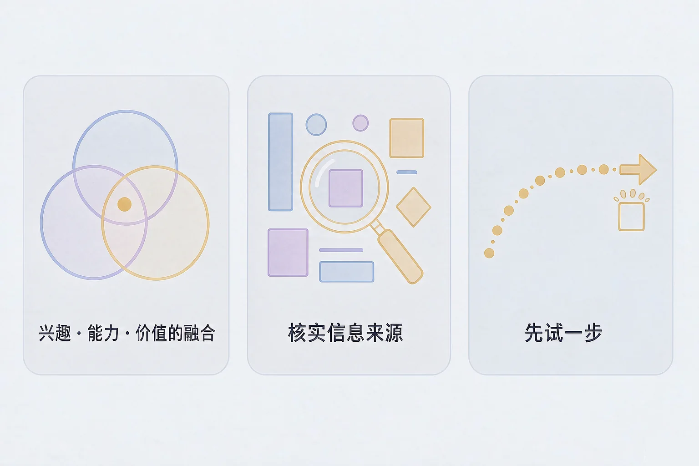
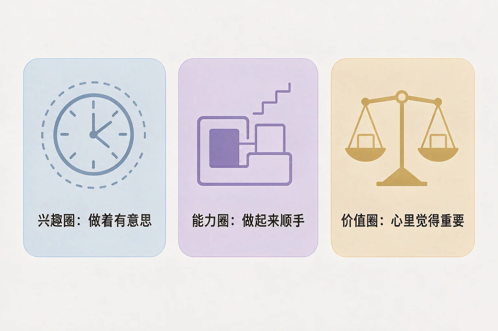
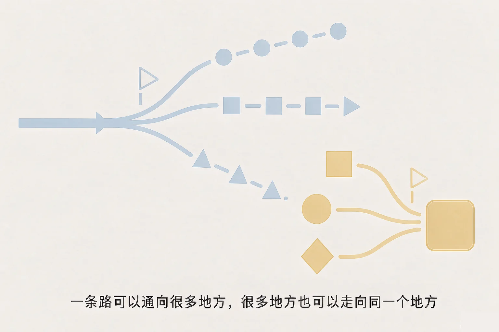

Gallery
v1.0.0 · skill v7.22.0
高中高三 · 生涯规划
都说要想清楚方向，可这个「清楚」到底从哪里来？

选一个最贴近你最近状态的困惑，后面的内容都会围着它展开。
选择或输入后，这节课会围绕你的问题展开。
先凭直觉选一个，选完立刻看到解释——错了也没关系，正好知道要重点听哪里。
1. 关于「兴趣圈」和「能力圈」，下面哪种说法更贴近它们本来的意思？
两个圈问的是不一样的问题，而且都在变。错因提醒：常见错误是误认为兴趣等于天赋、能力等于上限，于是一次对不上就认定自己不行。
2. 一位学长跟你讲了他自己读书时的真实经历。下面哪种处理方式更合适？
真实的一手经验很珍贵，但它是一个人的一次经历。错因提醒：容易把「一个人的真实经历」搞混成「普遍规律」——前者是参考，后者才需要多个来源。
3. 关于「专业」和「以后做什么」，下面哪种说法更符合实际？
专业更像是你愿意先走几年的那条路，不是一张定终身的表格。错因提醒：误认为选专业等于定终身，会让一次本来就允许调整的选择变得过分沉重。
兴趣、能力、价值——先把它们各自在问什么分清楚，答案对不上就不奇怪了。
为什么要先学这个？你已经听过很多次「要了解自己的兴趣和能力」；但把它们混成一个问题之后，就很容易觉得哪里都不对；所以先把三个圈分开问，再看它们能不能对上。
误认为三个圈必须完全重合才算找到了方向。其实对不上的地方同样有用——它告诉你哪里还需要时间去试，而不是告诉你哪里不行。

🔍 深层理解 换个角度再看一遍这件事，看看能不能说出背后的原理。
解释它：为什么三个圈分开问更有用？因为它们混在一起的时候，一次对不上就会让人觉得自己什么都行不通；分开看，问题就变成了一件可以慢慢查的事。
比较它：「我喜欢这个」和「我做这个比较顺手」，听起来接近，其实一个是感受、一个是证据，需要不一样的方式去确认。
迁移它：这一套不只用在升学上。以后选修课、社团、实习、换工作，都可以拿这三个圈问一遍。
左边九条描述，每条点一下它下面的圈名就能放进去，也可以同时放进两三个圈。右边会实时画出交集。
把这些描述放进你觉得合适的圈里
可以多选，放错了再点一下就取出来了
绿色亮点＝同时属于两个圈以上的描述，也就是你此刻的交集。
写下来，留给自己：把绿色区域里的那几条抄在一张纸上，再抄一条只落在一个圈里的——写这条是想提醒自己，对不上的地方不用急着解决。
先把这件事松开：选专业不是给一辈子定型。然后学三句话，用来筛掉靠不住的说法。

误认为只要说的人很有经验或很热情就可以信。经验值得听，判断依据还得自己查一遍——这两件事不冲突，可以同时做。
六条你大概听过的说法，每条选一个判断。选完会给出解释——说它不能作为依据，不等于说讲这话的人在骗你。
写下来，留给自己：最近有哪一条关于升学的说法，是你听过之后有点在意的？用三句话去查一查，把查到的来源写在这里。
情境：一位同学把三个圈都填了一遍，却发现里面有几条对不上，一时不知道该怎么办。我们陪他走一遍。
两个方向都容易走偏：一种是把交集当成结论，马上认定以后只能走这一条；另一种是因为对不上就停下来，觉得还没想清楚就不能开始。前者太重，后者太慢——交集是线索，先试起来才有新的信息。
把期待放在合适的位置：这五步不保证一次就找到答案，也不保证试了就一定喜欢。它能做到的是：让下一步变成一件具体可做的事。
先凭直觉选一个，选完立刻看到解释——错了也没关系，正好知道要重点听哪里。
1. 「现在还没找到自己想做什么，所以先别动，等想清楚再说」——这句话最需要改的地方是：
探索本身就是一个边做边看的过程。错因提醒：常见错误是误认为必须先想清楚才能开始，结果把一件可以小步试的事一直往后拖。
2. 关于「专业和职业不是一一对应」，下面哪种理解更合适？
不是一一对应，意味着这条路允许调整，也意味着不必把它想成定终身。错因提醒：容易把「不是一一对应」搞混成「怎么选都一样」——松一点不等于不用认真看。
3. 一条说法只在一个地方看到过，别处都查不到。下面哪种处理更合适？
只有一个来源，说明它还没被对上，先放一放是稳妥的做法。错因提醒：误认为只有一个来源就一定错——先放着，等对上或对不上，再决定。
三步都选好，下面会生成一句话。它不是承诺，只是给自己定一个可以动手的起点。
抄下来，带在身边：把生成的这句话抄在课本的第一页，或者存进手机备忘录；到了回看的时间再读一遍。
先凭直觉选一个，选完立刻看到解释——错了也没关系，正好知道要重点听哪里。
1. 家里吃饭时，有人跟你说：这个方向以后没前途，换一个。这时更合适的回应是：
问一句依据是什么，是把关心变成可以查的信息。错因提醒：常见错误是误认为要么全听、要么全不听，其实可以听进去，同时自己去核对。
2. 你做完三圈探索台，发现三个圈里有两条对不上。下面哪种做法更合适？
对不上的地方是信息，不是错误。错因提醒：容易把「暂时对不上」搞混成「我有问题」——它往往只说明某一件事还没轮到你去试。
3. 一个月后回看自己写的那句行动卡，你发现自己不太想继续了。下面哪种想法更合适？
试过之后知道不喜欢，本身就是收获。错因提醒：误认为放弃一次等于没有毅力——在探索阶段，换一条恰恰是往前走的方式。
回到开头那句「你想好了吗」：现在你可以换一个回答——我还没想完，但我有一个可以先去试的方向，也知道什么时候回来看看。这个回答就够用了。
记忆锚点：三个词帮你记住这节课——摊开看、对一遍、试一步。
给别人讲一遍：请用「摊开看、对一遍、试一步」这三个词，跟一位同学说说你的交集在哪里，以及你打算先去弄清楚哪一件事。
三层练习，做完第一、二层就算通关；第三层留给愿意继续探索的同学。
⭐ 基础巩固（必做）
⭐⭐ 能力应用（必做）
⭐⭐⭐ 迁移挑战（选做）
左边是学它之前要先会的，右边是学会之后可以继续探索的，下面是同一领域的伙伴知识。
图谱正在加载：首次进入需下载知识索引（约 1–3 秒），加载完成后本行会自动消失。